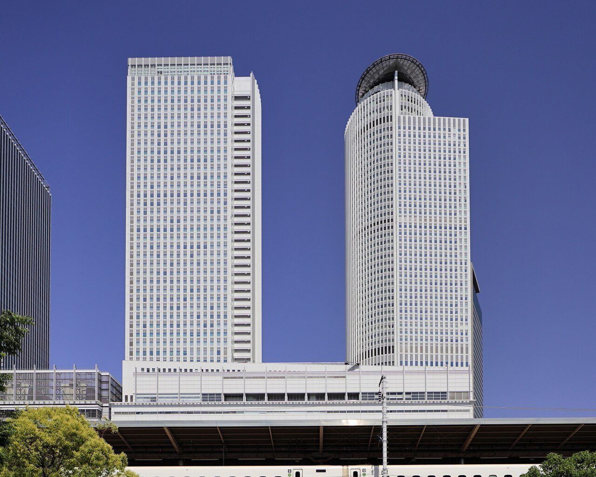
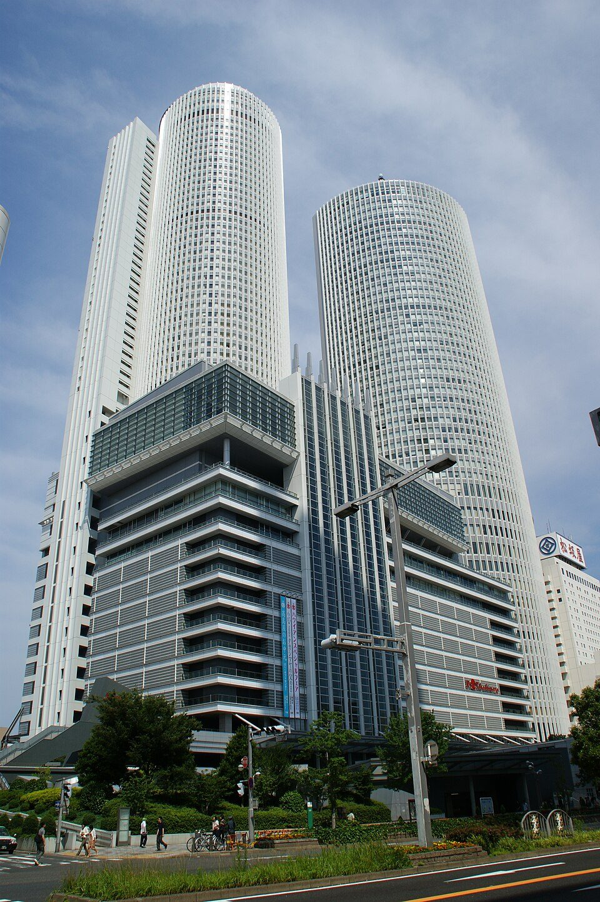
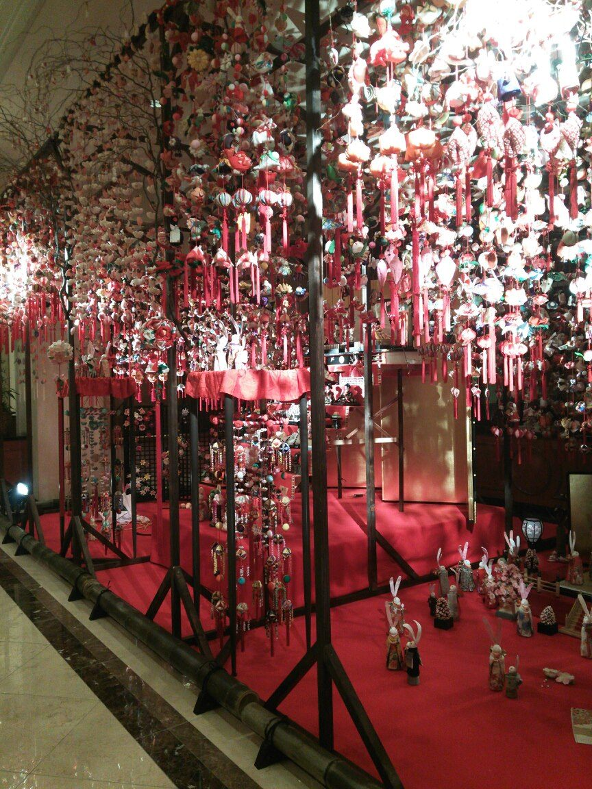
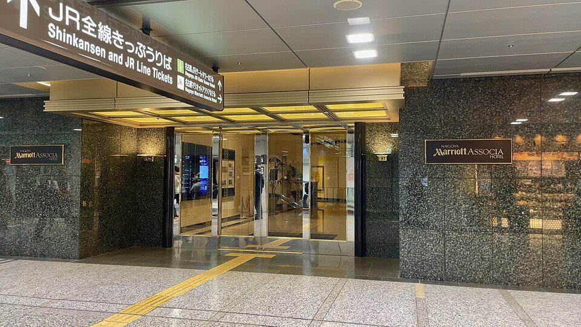
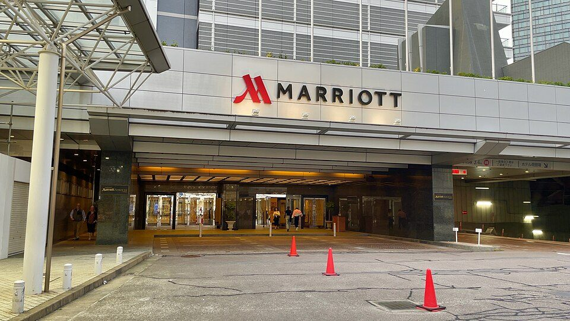
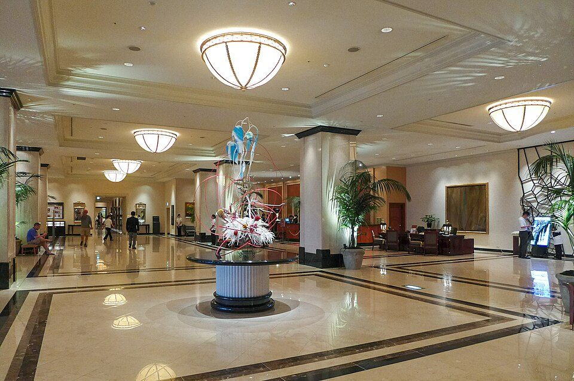

- Address
1-1-4 Meieki, Nakamura-ku, Nagoya 450-6002 (at Nagoya Station)
- Phone
+81 52 584 1111
- Check-in and check-out
Check-in from 15:00 · check-out by 12:00
Nagoya Marriott Associa

At the front desk
Rooms and beds
- Nights
- 19 Dec
- Stay
- Nagoya · Marriott
- Rooms
- One large family room for all 7 (extra bed confirmed)
More photos





.jpg){kind=link}




Notes and sources
Stay notes and saved evidence
Nagoya, confirmed: the hotel (Ota-san) confirmed 5 adults + 2 children on 9 Sep and re-confirmed them on 29 Sep for the amended one-night 19–20 Dec booking, with one extra bed for Arlene (JPY 7,000 (≈ SGD 56.70 · ≈ MYR 179.90)), Hollywood twin beds and no bed guards. Total JPY 98,200 (≈ SGD 795.42 · ≈ MYR 2,523.74). Parking JPY 3,300 (≈ SGD 26.73 · ≈ MYR 84.81) overnight, no reservation needed; the Alphard's height is fine.
Nagoya · Nagoya Marriott Associa Hotel
Check-in from Check-in time · check-out by Check-out time
Nagoya
day out not confirmed (LEGOLAND or Ghibli Park)
day out not confirmed (LEGOLAND or Ghibli Park)
Sat 19 Dec
Optional stops
Optional stops
Confirmed Marriott 78762934 amended to 19–20 Dec (email 28 Sep). Hotel confirmed 5 adults + 2 children on 9 Sep and 29 Sep; the online confirmation still prints 2 adults + 2 children. No guest-count action remains.
Booked Nagoya Marriott Associa
Booking checks
- Night
- Sat 19 Dec 2026
- Working route
- Nagoya
- Saved bed evidence
- Marriott Nagoya 78762934, 19–20 Dec: hotel confirmed 5 adults + 2 children, one extra bed, Hollywood twin beds, no bed guards.
- Coverage for 7
- 7 / 7Confirmed
- Conflict / gap
- Covered. Pay JPY 98,200 at checkout, plus parking. Marriott
Nagoya · Nagoya Marriott Associa Hotel
Google Maps ↗